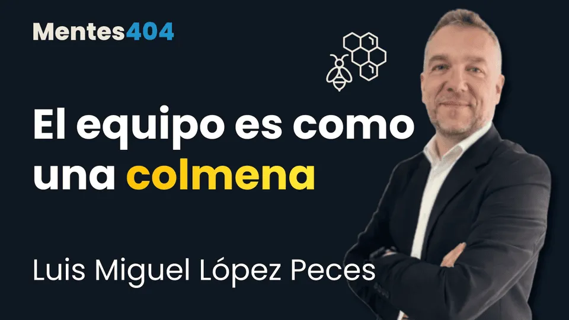

Inteligencia colectiva: el modelo para escalar equipos, con Luis Miguel López Peces

Una colmena funciona porque miles de individuos colaboran hacia un objetivo común. Luis Miguel López Peces, consultor y arquitecto tecnológico con más de dos décadas de experiencia en transformación digital, IA y automatización, tomó esa metáfora para hablar de equipos.
En el episodio 20 de Mentes404 hablamos de inteligencia colectiva y de su libro Big 4: yo estuve ahí.
Qué es la inteligencia colectiva
Para Luis Miguel consiste en detectar los patrones de un grupo, romper los hábitos antiguos que ya no sirven y acelerar y reforzar los nuevos. A diferencia de metodologías como Scrum, centradas en tareas, la inteligencia colectiva pone el foco en las personas: que cada miembro interiorice su rol y sienta que su trabajo tiene valor.
Todos en el equipo tenemos valor y una misión que cumplir.
¿Cómo implantarla? Primero con quienes dirigen, pero llegando a todos. Y no solo en reuniones formales: el café, una actividad deportiva o una cena también construyen equipo.
Los errores más comunes
- Juntar muchas estrellas sin saber articularlas: ha visto equipos de personas "normales", pero bien unidas, conseguir resultados más duraderos.
- Directivos que no ponen el foco en lo humano.
- Competir en lugar de colaborar: si un compañero es el empleado del mes, ya sabes de quién aprender.
Para un equipo pequeño, lo más importante es identificar en qué brilla cada persona y que todos tengan claro su rol y su posición.
El ego en la tecnología
El patrón que más ha visto repetirse en tecnología es el ego. El conocimiento da mucho poder, y siempre hay que contrarrestarlo con humildad, porque siempre habrá alguien que sepa más o que te enseñe algo. Para evitarlo propone no dejar que una sola persona haga un proyecto de principio a fin, sino trocearlo y hacer que participen varios perfiles.
Frente al ego está el síndrome del impostor, que para él es inseguridad. Y ahí el grupo puede ayudar mucho.
Lo que más ha cambiado
En veinte años, todo. La tecnología cambia tan rápido que hay que vivir en aprendizaje constante. Los equipos ya no están en una oficina: son internacionales y distribuidos, y mezclan generaciones, culturas y etapas vitales distintas. Y sobre las habilidades más importantes no duda: la emoción y la pasión, lo que no tienen las máquinas. Después, la curiosidad.
Su pasión por la tecnología llegó poco a poco, al ver que un programa suyo resolvía problemas reales, como agilizar la facturación de un departamento. Hoy le atrae observar la naturaleza y trasladar lo aprendido a la tecnología.
Big 4: yo estuve ahí
Luis Miguel no eligió entrar en una Big Four. Trabajaba en una empresa familiar de unas 50 a 80 personas que fue absorbida. Muchos compañeros se marcharon; él decidió quedarse, por curiosidad y para aprender. De las conversaciones con compañeros de distintas generaciones nació el libro, que cuenta la entrada y la salida de ese entorno.
No lo ve como una novela, sino como un manual para subrayar, anotar e incluso discutir. Quiere ayudar a evitar decepciones. Y aunque hable de una Big Four, cree que sirve para cualquier empresa e incluso para la vida social.
Su próximo paso es crear una comunidad alrededor del libro, para que sea "un libro vivo" y nadie se sienta solo con lo que vive en el trabajo. Su consejo a quien empieza: escúchate, haz tu propio ejercicio de qué quieres y apasiónate por algo.
🎧 Escucha el episodio completo
Este artículo solo recoge algunas ideas. La conversación completa, con sus matices, pausas y preguntas, está en el episodio.
👉 Episodio 20: Inteligencia Colectiva El modelo para escalar equipos